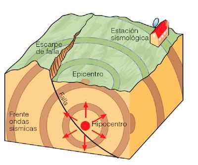

¿Que es un sismo? |
|
Un sismo o un terremoto es un fenómeno natural que consiste en una sacudida de la superficie terrestre, producida por el movimiento de las capas interiores de la Tierra. Todo sismo o terremoto se caracteriza por tener un hipocentro y un epicentro. El hipocentro es el punto de origen, y está ubicado en el interior de la tierra. Por su parte, el epicentro es el punto de la superficie donde se proyecta el movimiento tectónico. Está ubicado encima del hipocentro. Por ende, el epicentro es el punto de la superficie donde se percibe con mayor intensidad un terremoto. Causas de los sismosLos terremotos o sismos se producen debido al movimiento de las placas interiores de la tierra, llamadas capas tectónicas. Cuando las placas se desplazan, colisionan entre sí o se deforman, producen energía que es liberada en forma de temblor. Por esta razón, a este tipo de temblores se los clasifica como sismos tectónicos. Algunos sismos o terremotos pueden ser provocados por procesos volcánicos. Cuando un volcán libera el magma interior hacia la superficie, genera sacudidas sísmicas en la tierra. Del mismo modo, los movimientos de laderas o el hundimiento de cavidades rocosas pueden generar sismos o terremotos. Las regiones atravesadas por fallas tectónicas son más propensas a la actividad sísmica. Las zonas montañosas son un buen ejemplo de ello. Las montañas, a este respecto, nos dan un indicio de los lugares por los cuales pasa una falla. 
Consecuencias de los sismosDependiendo de su intensidad, los terremotos o sismos pueden provocar diversas consecuencias en la naturaleza y para la vida humana. Entre ellas, podemos mencionar: rupturas del suelo,destrucción del patrimonio material,muertes,incendios,maremotos (tsunamis),deslizamientos de tierra. Anualmente, en el mundo ocurren más de trescientos mil sismos perceptibles, aunque la gran mayoría de ellos no produce pérdidas ni daños materiales. De hecho, solo un bajísimo porcentaje es significativo. |
|